●印象を左右する
色によって見る人の気分や印象が大きく変わります。たとえば、赤やオレンジなど暖色は元気・活発なイメージ、青は落ち着きや信頼感を与えるイメージといったように、人は色を見たときに無意識に感情やイメージを持ちます。Webサイトを通じて伝えたい雰囲気やメッセージに合わせて色を選ぶことで、より伝えたいイメージを強調できます。
●読みやすさ・見やすさを保つ
文字や背景の色が似すぎていたり、色同士がぶつかり合っていたりすると文字が読みにくくなります。見づらいWebサイトは使う人にとってストレスになるため、白や黒などの基本的な色と、補助的な明るい色をうまく組み合わせて読みやすさを保つことが大切です。
●ブランドやテーマを表現する
企業やサービスのイメージカラーがあれば、その色をWebサイトにも使うことで「この色はあの会社の色だ」と覚えてもらいやすくなります。また、学習サイトなら集中しやすい落ち着いた色、遊びやゲームのサイトなら楽しくなるようなポップな色など、テーマに合った色を使うことで、一貫性のあるデザインが生まれます。
●読みやすさを左右する
フォントによって文字の読みやすさが変わります。例えば、細くて飾りが多い文字はデザイン的におしゃれに見えますが、小さい画面で読みにくい場合があります。一方で太くシンプルな文字は、スマホなどの小さい画面でもはっきりと読みやすいです。Webサイトに来てくれた人にストレスなく文章を読んでもらうために、読みやすいフォント選びが大切です。
●サイトのイメージや雰囲気を伝える
フォントには、「やさしい」「かっこいい」「まじめ」といった雰囲気を作る力があります。たとえばポップで丸みのあるフォントは親しみやすいイメージを与えますし、スタイリッシュな細めのフォントは都会的でクールなイメージを作り出せます。Webサイトの内容や目的に合ったフォントを使うことで、見た人に伝えたいイメージを強調できます。
●デザイン全体の統一感を保つ
Webサイトには、タイトルの大きな文字、本文の文章、メニューのボタンなど、いろいろな文字が出てきます。あまりにも違う雰囲気のフォントをたくさん使いすぎると、ごちゃごちゃした印象を与えてしまうことも。フォントをある程度そろえたり、役割に応じて使い分けたりして統一感を持たせると、全体の見た目がキレイに整理されます。
まずは、アクセシビリティとユーザビリティについて理解しよう
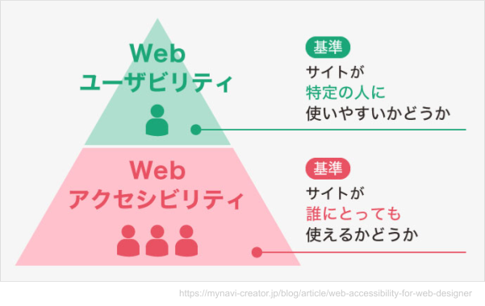
そこで色やフォントが果たす役割は大きい
日本人の男性の約5%（20人に1人）、女性の約0.2%（500人に1人）が生まれつきの色覚異常を持っていると言われています。（異常と言っても色が見えないわけではない）
例えば100人に「赤色」について聞いたとして、100人が全く同じ「赤色」を指すことはないと思います。Webページの制作者は、100人にそれぞれの「赤色」があることを踏まえた上でものづくりをしていかなければなりません。全ての人が問題なく使えるWebサイトを追求するために、色のアクセシビリティが重要なのです。
WCAGとは「Web Content Accessibility Guidelines」の略称で、Web技術の標準化を推進する団体であるW3Cが提唱する、世界中で普及しているWebコンテンツのアクセシビリティガイドライン（ルール）です。このガイドラインに従うことで、誰にでも利用しやすいWebコンテンツになります。
Webサイトを作る際はこういったルールがあることを知っておきましょう。
https://webaim.org/resources/contrastchecker/
コントラストチェックツールを使ってコントラストのチェックをしてみよう
文字（Foreground）と背景（Background）との色を決める
ここではパレットから選んでもカラーコードを入力してもどちらでもOK
サンプルは文字が白（#FFFFFF）背景が蛍光緑（#8EE228）
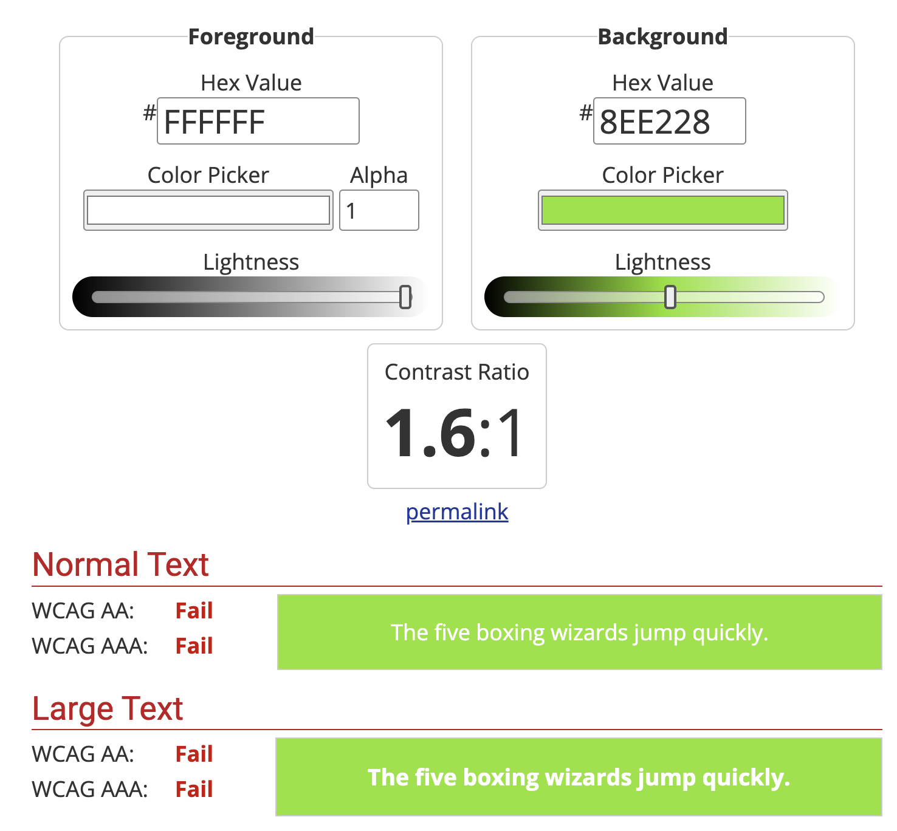
ここではFail=失敗となっています。つまりこの色の組み合わせは見づらいということ。
WCAGのルールでは...
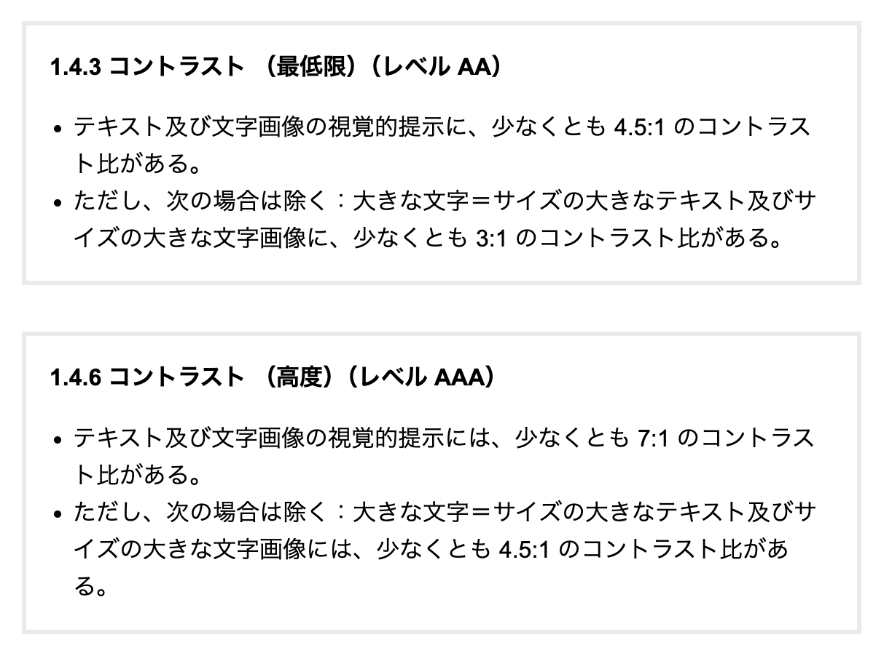
どういった色の組み合わせが見づらい/見やすいのか、以下のサイトを参考にいろいろと試してみよう。
もう少し詳しく勉強したい人はこのサイトを見てみましょう。
前回はフォントの種類について学習しましたが、フォントの種類以外にも文字を読むときの、可読性・視認性・判読性に影響を与えるものを見ていきましょう。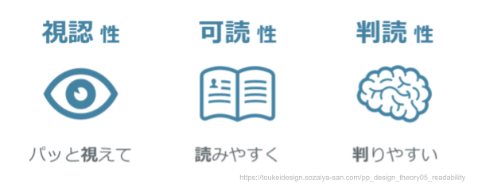
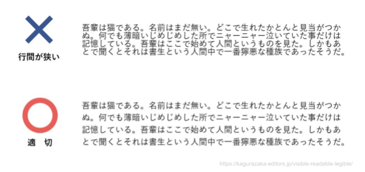
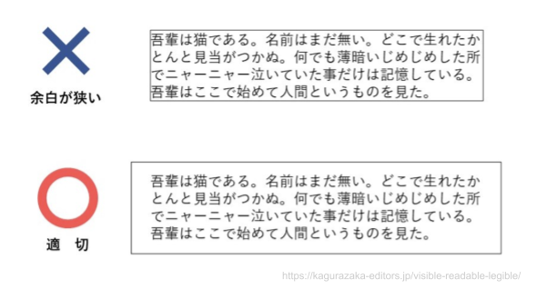
行間や余白については既にSTUDIO上で作業を行ったことがあるので、ここでは操作方法については触れませんが、余裕を持たせると同じ量の文章でも読みやすくなることを知っておきましょう。
人は自然に文章を目で追いかけます。新聞やマンガなど独特なパターンがありますが、Webサイトでもいくつかのパターンが存在します。
その名の通りアルファベットのZの形のように、ユーザーの視線が左上→右上→左下→右下の順に移動するパターンのことで、主に初見ユーザーがページ全体を把握する時や、横組みのテキストなどを読む時にみられる動きです。
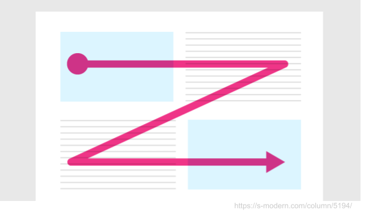
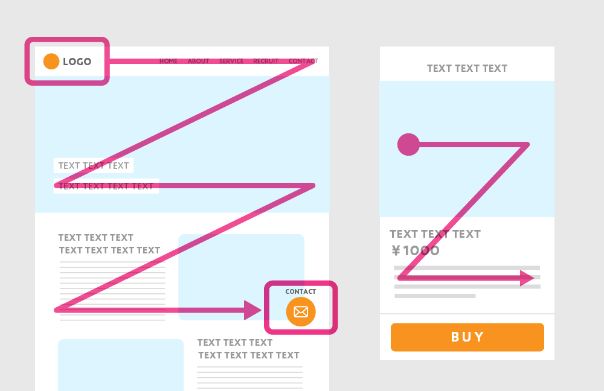
このZ型では、ユーザーに最も強く伝えたい情報を一番最初に目に入る左上に配置し、視線が止まる一番最後の右下には、ユーザーに行なってほしい行動を促すためのアクションボタンなどを配置するのが効果的です。
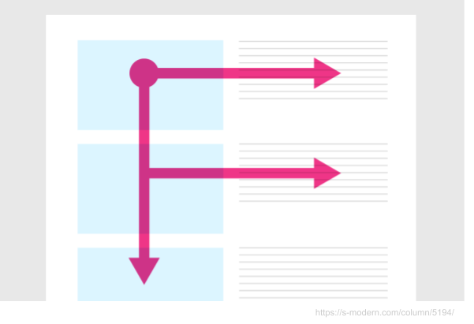
F型とは、アルファベットのFの形のように、ユーザーの視線が左上→右上→左下→右下→更に下の順に移動するパターンのことで、2回目以降に訪れたサイトで、詳細を把握する際に行われる視線の動きです。
Z型に一見よく似ていますが、左の縦軸の内容でユーザーが大まかな情報を得てから、右の横軸の内容でさらに詳細を把握し、どんどん下に視線が流れていくのが特徴です。
このF型を使う場合は、ユーザーに最も強く伝えたい情報を上部に配置したり、右側よりも左側に配置するのが効果的です。
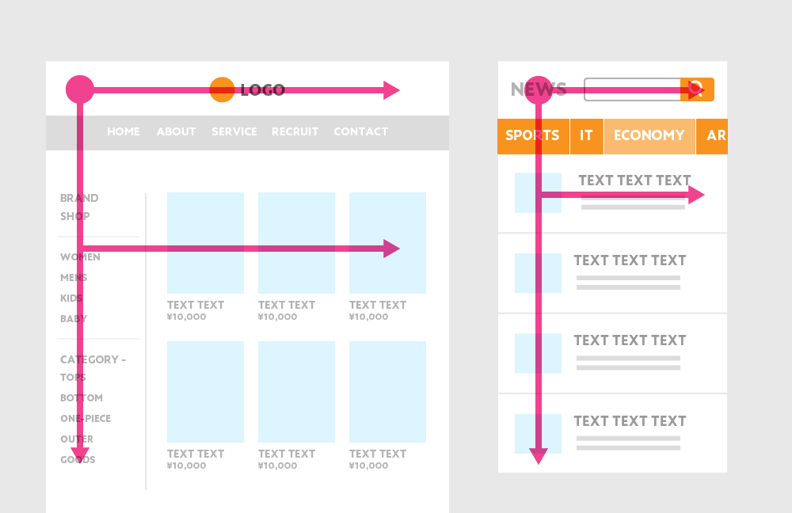
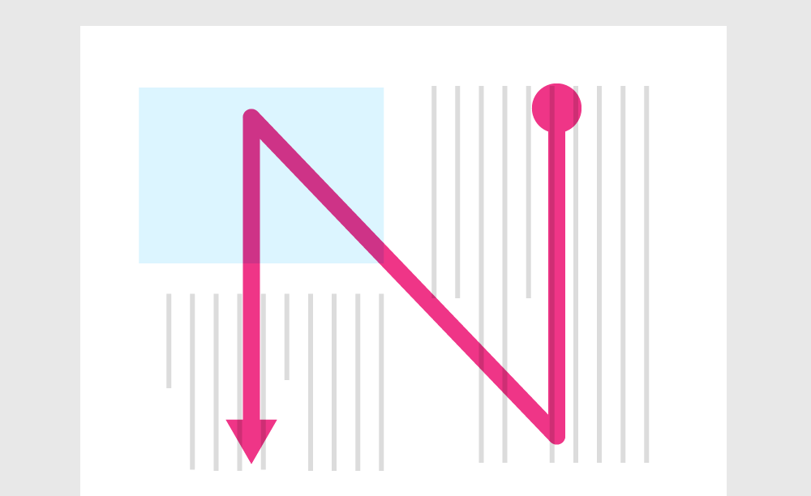
N型とは、アルファベットのNの形のように、ユーザーの視線が、右上→右下→左上→左下の順に移動するパターンのことです。
N型は主に雑誌や新聞などの縦書きのレイアウトに用いられ、日本人の習慣化した視線の動きです。
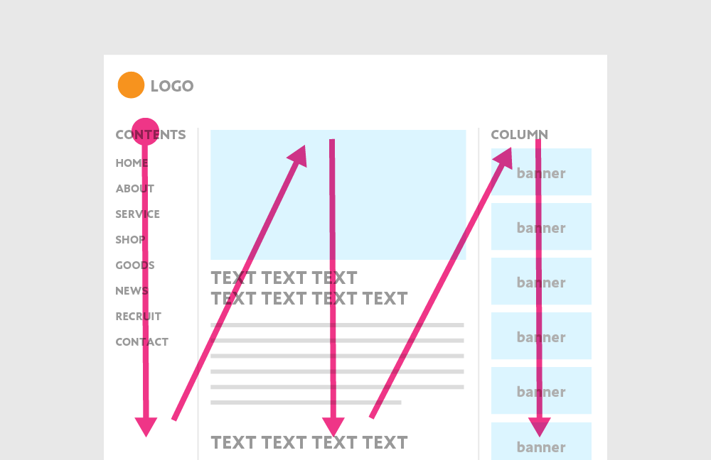
このN型は主に3カラム以上のページや、縦組の要素が並んでいるサイトなどに使われています。
また、和イメージした縦書きのレイアウトにする際などにもこのN型のパターンを使うことがあります。
STUDIOで作られたWebサイトで優れた作品の投票が行われています。
https://designaward2024.studio.design/
いくつかのサイトを見ながら、Z型、F型、N型のどの型に沿って作られたのか、またどれにも当てはまらないのか...を見てみましょう。
1/27までは投票もできるので、投票をしても良いです。
https://machida.schoolweb.ne.jp/1320099
これまで学習したことを活かして、より良い南成瀬中のWebサイトを提案します。